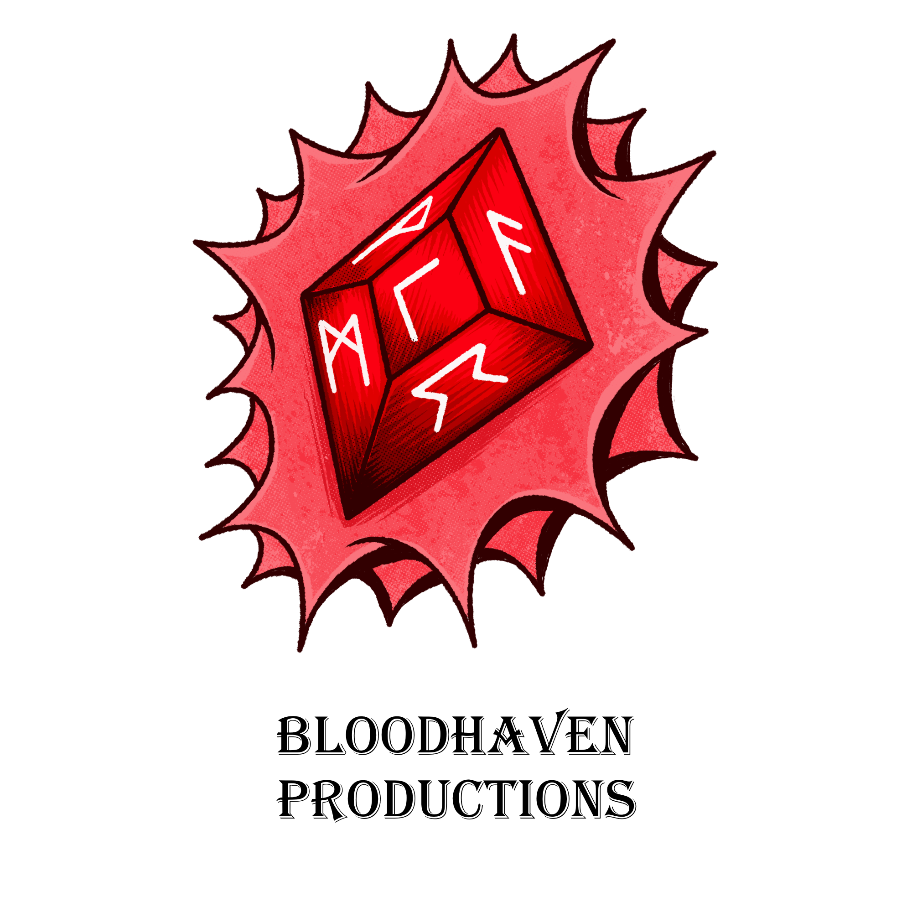
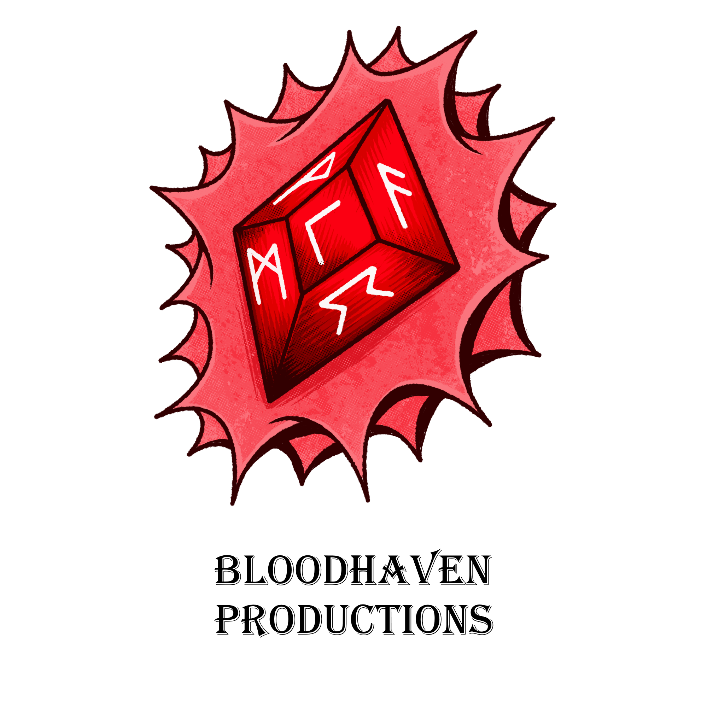

More about me
Software development isn't just a job; it's my passion. I relish the opportunity to tackle complex challenges and bring innovative solutions to life. The thrill of creating functional, elegant software is what drives me every day.From cutting-edge frameworks and languages to tried-and-true tools, I thrive on staying up-to-date with the ever-evolving tech landscape. Expect to see a diverse skill set that includes but isn't limited to JavaScript, Python, React, Node.js, and more.
While my career highlights undoubtedly serve as the primary point of interest, I would like to take a moment to provide insight into my personal endeavors. As a passionate enthusiast, I embarked on an entrepreneurial venture known as BloodHaven Productions. My deep-seated affinity for the art of storytelling, particularly within the realm of comic books, ignited the inspiration to create my own independent comic book series, an ongoing project titled "BloodSworn." My dedication to this artistic pursuit mirrors the same unwavering commitment I exhibit in the realm of coding, both receiving my full and undivided attention until the desired level of perfection is attained.
 

Thank you for reading my journey, click on the projects button below to see my work.